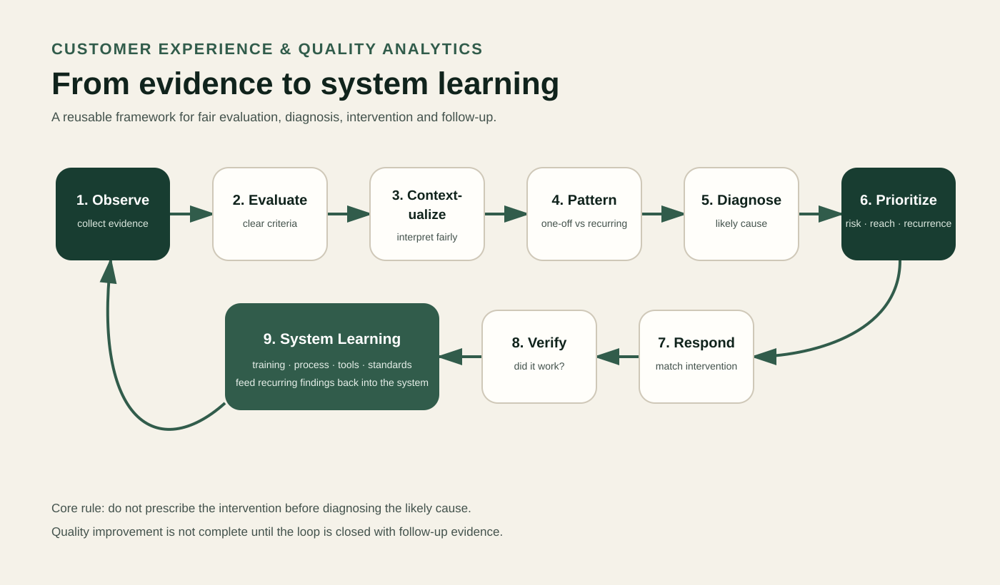

Customer Experience & Quality
From Individual Interactions to Repeatable Quality Feedback
Using interaction review, pattern recognition and coaching to make quality feedback specific enough to act on.

Problem
One call is an incident. Repeated patterns are operational evidence.
In high-volume customer-service environments, isolated anecdotes are not enough to improve quality. Teams need a repeatable way to review interactions, separate one-off issues from recurring patterns, and communicate findings in a form frontline staff can actually use.
My role sat at the boundary between customer experience, quality expectations and day-to-day service execution.
Working method
Interaction → evaluate → identify pattern → feedback → reinforce → observe.
- Review interactions against defined quality expectations.
- Identify recurring errors, risks and improvement opportunities.
- Turn observations into structured, usable feedback.
- Support coaching and reinforcement rather than stopping at the score.
- Observe later performance to close the feedback loop.
Transferable lesson
Good quality systems support the people doing the work.
The experience shaped how I approach systems work now: look at what is actually happening, distinguish repeated patterns from isolated events, make feedback specific enough to act on, and follow through instead of treating analysis as the finish line.
Standards need to be clear enough to evaluate consistently and practical enough to help frontline teams improve.
Evidence boundary
Method over disputed historical metrics.
The role, responsibilities and working method are well supported. Older résumé and portfolio versions contain conflicting coaching counts, floor-support counts and performance percentages, so those numbers are deliberately not used here.
No customer conversations, proprietary scorecards or employer-confidential material are reproduced.